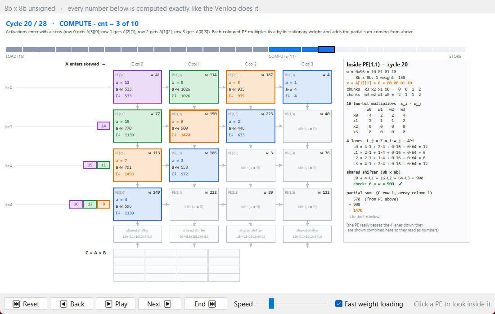

A 4 x 4 adaptive-precision (ADiP-style) systolic array for matrix multiplication was designed in Verilog and runs on a Sipeed Tang Nano 9K FPGA (Gowin GW1NR-9). Each processing element (PE) is built from sixteen 2-bit x 2-bit multipliers. The same hardware computes 8b x 8b, 8b x 4b or 8b x 2b products, unsigned or signed INT8, so lower weight precision gives more results per clock.
On the board, every mode returns C = A x B that matches a Python reference bit for bit. One run takes 28 clock cycles (1.04 µs at 27 MHz). Throughput rises from 2.29 to 9.14 multiply-accumulates (MAC) per cycle as the weight precision drops from 8 to 2 bits. The design uses 8230 of 8640 LUTs (95%) and closes timing at 69.6 MHz.
A laptop application sends matrices over USB-UART, checks every result, scales the problem to 8 x 8 and 16 x 16 matrices by tiling, and animates the calculation cycle by cycle.
Neural-network inference is dominated by matrix multiplication, and quantized models store weights as 8-, 4- or even 2-bit integers. A fixed 8 x 8-bit multiplier wastes hardware when the weights are narrower. ADiP-style adaptive precision splits every multiplier into 2-bit pieces, so one array serves all three precisions and packs more weights per word as precision falls.
Objectives of this project:
Systolic array. A grid of identical PEs where data moves one PE per clock and each PE does one multiply-accumulate. This design is weight-stationary: PE(r, c) keeps one packed weight byte for the whole run, activations flow left to right, and partial sums flow top to bottom.
ADiP chunk multiplication. An 8-bit activation x is split into four 2-bit chunks, x = 64·x3 + 16·x2 + 4·x1 + x0. The weight byte is split the same way into w3..w0. Sixteen 2b x 2b multipliers form every product xi·wj, grouped into four lanes:
Shared shifter. The lanes are not combined inside the PE. One shared shifter per column combines them according to the mode, which is what makes the precision adaptive:
| Mode | Weights per byte | Weight range (unsigned / signed) | Shifter output per column |
|---|---|---|---|
| 8b x 8b | 1 | 0..255 / -128..127 | L0 + 4·L1 + 16·L2 + 64·L3 (1 result) |
| 8b x 4b | 2 | 0..15 / -8..7 | L0 + 4·L1 and L2 + 4·L3 (2 results) |
| 8b x 2b | 4 | 0..3 / -2..1 | L0, L1, L2, L3 (4 results) |
The 4 x 4 array therefore produces a 4 x 4, 4 x 8 or 4 x 16 result matrix C from the same 16 PEs. Difference from the ADiP paper: this design uses a weight-stationary skewed array, not ADiP's diagonal interconnect.
In each run the PC loads A and the packed weights over UART and sends start. The FSM then loads the 16 weights into the PEs (16 cycles) and streams A through the array (11 cycles). The shifters and the output memory assemble C, and the report sends A, B, C and the latency back as decimal text. The two buttons can also select the mode and start a run without a PC.
The design is 17 Verilog files in rtl/, parameterised by N (array size, a power of two; N = 4 on this board).
| Module | Role | Key widths / timing |
|---|---|---|
multiplier_2bit | 2b x 2b multiplier; each operand optionally a signed top chunk | 5-bit signed product, -6..9 |
reconfigurable_multiplier | 16 x multiplier_2bit in 4 lanes | 4 lanes x 11-bit signed |
accumulator | psum_out <= psum_in + lane product (registered) | 13-bit (PSUM_W) |
adip_pe | stationary weight register, activation register, multiplier, 4 accumulators | 8-bit weight, 4 x 13-bit psums |
systolic_array | N x N PE grid, activations right, psums down | 4 lanes per column out |
shared_shifter | one per column; combines lanes by mode | 4 slots x 19-bit (OUT_W) |
adip_controller | FSM IDLE → LOAD → COMPUTE → STORE → DONE, latency counter | 16 + 11 + 1 = 28 cycles |
weight_memory | N x N packed weight bytes | async read |
input_memory | matrix A + skewed feeder: row r gets A[cnt-r][r] | 8-bit |
output_memory | de-skewing capture: column c writes row m = cnt-N-c | 4 x 19-bit slots per word |
uart_rx, uart_tx | 115200 8N1 serial | 27 MHz / 115200 |
uart_cmd | PC command decoder (M, I/U, A, W, S); drops a stalled command after ~50 ms | |
uart_report + bin2bcd | prints A, B, C in decimal (with sign) and LAT | |
button_filter | debounce for the start and mode buttons | |
adip_top | top level: mode/sign latching, signed-chunk flags, LEDs | 6 LEDs, 2 buttons |
Controller timing. LOAD writes one weight per cycle (N x N = 16 cycles) while the datapath is cleared. COMPUTE runs 3N - 1 = 11 cycles: activations enter skewed, and each column captures its finished rows through its shifter. STORE takes one cycle. Latency = N x N + 3N = 28 cycles for N = 4, the same in every mode.
Signed-chunk flags (adip_top.v): only the top chunk of each number is signed. For weights this depends on the mode: w3 in 8b x 8b, w3 and w1 in 8b x 4b, every chunk in 8b x 2b.
Signed mode reuses the same multipliers: in two's complement only the top 2-bit chunk carries the sign, so each 2-bit multiplier gets a "signed chunk" flag. A flagged chunk reads -2..1 instead of 0..3. Everything after the multipliers is ordinary two's complement addition. The PC switches modes with I (signed) and U (unsigned).
Worked example, 3 x (-69) in 8b x 8b mode. x = 3 = 00 00 00 11 and w = -69 = 10 11 10 11, so the weight chunks w3..w0 are -2 (signed top), 3, 2, 3.
| Lane | x · wj | Shift | Contribution |
|---|---|---|---|
| w0 = 3 | 9 | x1 | 9 |
| w1 = 2 | 6 | x4 | 24 |
| w2 = 3 | 9 | x16 | 144 |
| w3 = -2 | -6 | x64 | -384 |
| Sum | -207 = 3 x (-69) |
Signed results need one extra bit: lane products grew from 10 to 11 bits, the accumulator from 12 to 13 and the result from 18 to 19. The extremes for N = 4, (-128)(-128) x 4 = +65536 and 127 x (-128) x 4 = -65024, are covered by the top-level testbench.
| Design | LUT4 | FF | Fmax (post-route) |
|---|---|---|---|
| Unsigned only | 6064 / 8640 (70%) | 1960 / 6480 (30%) | 59.4 MHz |
| Unsigned + signed INT8 | 8230 / 8640 (95%) | 2059 / 6480 (31%) | 69.6 MHz |
Signed support cost about 2,200 LUTs. The UART report prints a minus sign and widens each column by one character.
Every testbench passes in Icarus Verilog, unsigned and signed, and the hardware results match the same Python reference.
| Testbench | What it checks | Result |
|---|---|---|
tb_multiplier | 2b x 2b multiplier and the 4-lane reconfigurable multiplier | PASS |
tb_pe | one PE: weight load, activation pass-through, lane accumulation | PASS |
tb_systolic_array | 4 x 4 array dataflow and column partial sums | PASS |
tb_wave | full design, 6 runs (3 modes x unsigned/signed), result memory vs. computed A x B, latency | ALL PASS, 28 cycles each |
tb_adip_top | phases 0-9: buttons, PC commands over UART RX, signed default and extreme data; every character of the UART report compared with the expected text | ALL PASS |
Golden model. sim/golden_model.py computes C with a plain matrix multiply and with a cycle-accurate copy of the RTL (2-bit chunks, skew, column accumulation, shared shifter). It also prints the exact UART text the board must send.
GTKWave. sim.bat wave runs tb_wave and opens sim/out/tb_wave.vcd with the layout sim/tb_wave.gtkw. Recording starts just before the first run (8b x 8b, unsigned, default data), so the view opens on it. Readable probe signals were added to the testbench only; the RTL is unchanged.
| Group | Signals | What to look for |
|---|---|---|
| Control | mode_q, sign_q, u_ctrl.state (shown as IDLE/LOAD/COMPUTE/STORE/DONE), cnt, busy, done, lat | LOAD at 15188.5 ns, COMPUTE at 15780.5 ns, DONE at 16224.5 ns; lat = 28 |
| LOAD | w_load_en, r_cnt, c_cnt, w_data | 16 weight bytes, one per cycle (41, 114, 187, 4, ...) |
| COMPUTE | a_in_row0..3 | A enters row r one cycle after row r-1 (the skew) |
| Results | c_write_colX, c_row_colX, c_colX_slot0 (signed decimal) | C row 0 = 1130, 1860, 798, 760, written one cycle apart per column (de-skew) |
| Output | rpt_busy, uart_tx, led | UART report starts after DONE |
The design fits the GW1NR-9 at 95% of its LUTs and meets timing with a 2.6x margin (69.6 MHz achieved, 27 MHz board clock). The whole flow is open source (OSS CAD Suite) and is scripted in build.bat and flash.bat.
synth_gowin -noalu with plain 4-input LUT mapping (abc -lut 4). The default abc9 step crashes on the Windows build, and the default ALU / wide-LUT mapping needs about 104% of the LUTs.build/adip.fs.| Resource | Used / available | Utilisation |
|---|---|---|
| LUT4 | 8230 / 8640 | 95% |
| Flip-flops | 2059 / 6480 | 31% |
| I/O pins | 11 / 276 | 3% |
| Fmax (post-route) | 69.6 MHz | constraint 27 MHz, PASS |
The critical path runs through the UART report's sign handling and binary-to-BCD conversion, not through the array. An 8 x 8 array (64 PEs) does not fit this device.
| Signal | Pin | Function |
|---|---|---|
| clk | 52 | 27 MHz oscillator |
| uart_tx / uart_rx | 17 / 18 | USB-UART to PC, 115200 8N1 |
| btn_start_n / btn_mode_n | 4 / 3 | start a run / cycle precision mode |
| led[0..5] | 10, 11, 13, 14, 15, 16 | DONE, BUSY, 8x8, 8x4, 8x2, UART printing (active low) |
On the real Tang Nano 9K, all six cases (three precisions, unsigned and signed) return a UART report identical to the golden model, and every run takes 28 cycles. Dropping the weight precision from 8 to 2 bits quadruples throughput on the same 16 PEs.
Bring-up. The board enumerates as USB 0403:6010. Interface 0 (JTAG) uses the WinUSB driver for openFPGALoader; interface 1 is the serial port (COM4). The bitstream was loaded to SRAM, tested, then written to flash (CRC check passed), so the design runs at every power-up.
| Mode | Results per run | MAC per cycle | MMAC/s at 27 MHz | MOPS at 27 MHz |
|---|---|---|---|---|
| 8b x 8b | 64 (C is 4 x 4) | 2.29 | 61.7 | 123.4 |
| 8b x 4b | 128 (C is 4 x 8) | 4.57 | 123.4 | 246.9 |
| 8b x 2b | 256 (C is 4 x 16) | 9.14 | 246.9 | 493.7 |
Latency is 28 cycles = 1.04 µs at 27 MHz in every mode; the 16 LOAD cycles are included, so a streaming design with preloaded weights would do better. Throughput counts useful multiply-accumulates per run divided by 28 cycles; MOPS counts the multiply and the add separately.
Default data check (8b x 8b, unsigned). C row 0 = 1130, 1860, 798, 760, the same on the board, in GTKWave, in the golden model and in the PC app. The LEDs show DONE plus the selected mode after each run.
A Python/Tkinter app (pc/adip_gui.py) drives the board over USB-UART: the user picks the precision and signedness, types or randomises A and B, and presses Run on FPGA. A result window shows C, latency and throughput, and marks every value green when it equals the PC's own calculation. The app finds and connects to the board automatically when it is plugged in.
| Command (PC to FPGA) | Meaning |
|---|---|
M m, or 0 / 1 / 2 | precision mode 8x8 / 8x4 / 8x2 |
I / U | signed INT8 / unsigned |
A + 16 bytes | matrix A, row-major |
W + 16 bytes | packed weights, one byte per PE |
S | start; the FPGA replies with the A, B, C text report and LAT |
Tiling to 8 x 8 and 16 x 16. The array stays 4 x 4. The app cuts A into 4 x 4 tiles and B into 4 x 4, 4 x 8 or 4 x 16 tiles (by mode), runs each tile pair on the FPGA, and adds the partial tiles along K. No RTL change was needed. All 12 cases below were verified on the board with random data, unsigned and signed.
| Matrix size | Mode | FPGA runs | FPGA cycles | MAC per cycle | Total time incl. UART |
|---|---|---|---|---|---|
| 16 x 16 | 8b x 8b | 64 | 1792 | 2.29 | 10.5-10.6 s |
| 16 x 16 | 8b x 4b | 32 | 896 | 4.57 | 5.3-6.8 s |
| 16 x 16 | 8b x 2b | 16 | 448 | 9.14 | 3.4 s |
| 8 x 8 | 8b x 8b | 8 | 224 | 2.29 | 1.3 s |
| 8 x 8 | 8b x 4b | 4 | 112 | 4.57 | 0.7-0.9 s |
| 8 x 8 | 8b x 2b | 4 | 112 | 4.57 | 0.9 s |
The array's compute for 16 x 16 at 8 bits is only 1792 cycles (66 µs); the 115200-baud text report is the bottleneck. In 8 x 8 / 8b x 2b, half of each B tile is zero padding, so throughput stays at 4.57.
Cycle-by-cycle animation. The app replays any run as the hardware executes it, using a Python copy of the RTL dataflow (pc/adip_core.py, cycle_trace). It shows the 16 LOAD cycles, the skewed activations moving right, partial sums moving down, the shared shifters and C filling in. Clicking a PE shows its 2-bit chunks, the 16 two-bit products, the four lane sums and the shift-and-add for that cycle. At the end it checks the result against A x B and against the FPGA's answer.

All five objectives were met: one 4 x 4 array of 2-bit-chunk PEs computes 8b x 8b, 8b x 4b and 8b x 2b products, unsigned and signed INT8, verified in simulation and bit-exact on the Tang Nano 9K. Throughput scales 1x : 2x : 4x as weight precision halves, at a constant 28-cycle latency.
Limitations
Future work
Run these from the OSS CAD Suite terminal in the project folder.
| Task | Command |
|---|---|
| All testbenches | sim.bat |
| Waveform in GTKWave | sim.bat wave |
| Expected outputs | python sim/golden_model.py 4 (add signed for INT8) |
| Synthesis, place and route, bitstream | build.bat |
| Load to SRAM / write to flash | flash.bat / flash.bat flash |
| PC app | run_gui.bat (first time), then ADiP_App.vbs |
| App logic self-test | python pc/adip_core.py |
| Folder | Contents |
|---|---|
rtl/ | 17 Verilog modules (section 4) |
tb/ | 5 testbenches (section 6) |
sim/ | golden model, GTKWave layout and name filters |
constraints/ | tang_nano9k.cst pin file |
pc/ | GUI, protocol and tiling (adip_core.py), animation (adip_anim.py), auto-start watcher |
build/ | bitstream adip.fs, Yosys and nextpnr logs |